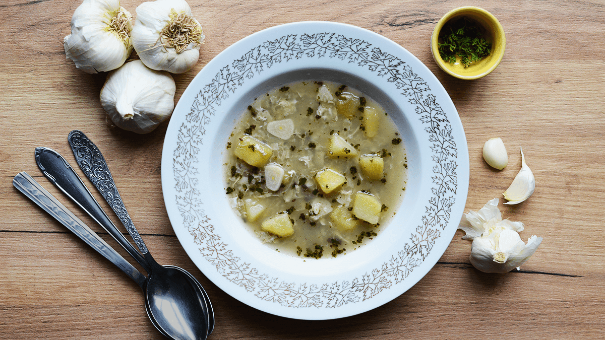

Homepage
Garlic soup

Are you looking for a miracle soup that will strengthen your organism?
We have her here! Garlic will support the immune system and it is also simple
and quick to prepare. In short, a dream.
Ingredients
- Potatoes - 4 pcs
- Garlic - 10 cloves
- Onion - 1 pcs
- Water (or vegetable stock) - 1 l
- Butter
- Bay leaf
- Allspice - 2 pcs
- Egg - 1 pcs
- Caraway seeds
- Marjoram
- Parsley
- Fresh cracked pepper
- Salt
Steps
- Lightly fry the chopped onion in butter in a saucepan.
Cover it with water or vegetable broth and add boiled potatoes cut into
small cubes with cumin, bay leaves and allspice.
- Once the onion softens a bit, add the sliced garlic (5 cloves).
Press the rest of the garlic and add it in the last minute of cooking so
that it retains as many vitamins as possible
and a strong flavor.
- Season as needed with marjoram, parsley or chives, pepper and salt.
Finally, as soon as you turn off the stove, add the garlic press and 1 beaten egg.